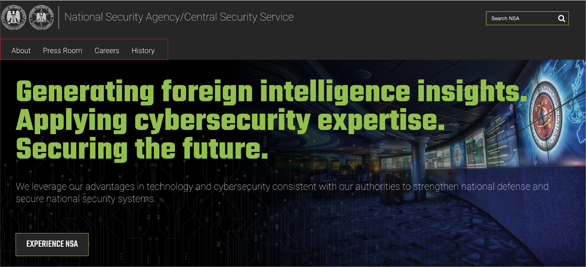
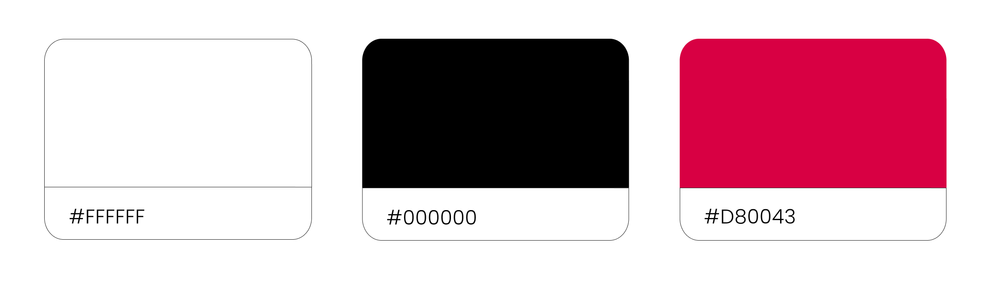

back to portofolio
National Security Agency
PROJECT DESCRIPTION:
The National Security Agency (NSA), a cornerstone of national security, requires a website redesign to adapt to evolving digital demands. This redesign aims to enhance user experience, bolster cybersecurity, improve transparency and public outreach, streamline information dissemination, and project a professional global image. It represents a strategic response to modern challenges, reinforcing the NSA's mission effectiveness.
ROLE IN TEAM:
Research, visual identity & prototyping.
THE GOAL:
Reorganize the website for streamlined information access, transparency, and enhanced cybersecurity, while simultaneously delivering an improved and intuitive user experience for a diverse audience, ultimately strengthening the agency's mission effectiveness and global reputation.

DESIGN PROCESS

PROTO PERSONA
We initiated our design process by creating a prototype persona, whom we named Josh. Josh, a 15-year-old student, is in the midst of crafting a school paper and simultaneously exploring the possibility of pursuing a career in cybersecurity. This proto persona serves as our guiding compass, embodying the diverse needs and aspirations of our user base, and informs our design decisions as we endeavor to create a user-friendly and engaging experience tailored to Josh's goals and challenges.
USER PATH
After defining a Proto Persona, we agreed that our users are gonna be students between elementary school and high school. This is some if the reason why we think they’ll be interested in visit the NSA website:
HEURISTIC EVALUATION
A heuristic evaluation is a structured and methodical approach to assessing the usability and effectiveness of a digital interface or system. It involves the examination of a product by usability experts, who utilize a set of established usability principles or heuristics to identify potential issues and areas for improvement. This evaluation method plays a crucial role in ensuring that user interfaces meet high standards of usability, efficiency, and user satisfaction, ultimately leading to an enhanced user experience.
OBJECTIVE
Our objective with the heuristic evaluation was to pinpoint the primary issues within the website and devise innovative solutions to address them, ultimately aiming to enhance the user experience. By focusing on key problem areas, we sought to implement changes that would not only resolve existing issues but also contribute to an overall improved and more user-friendly website. This approach aligns with our mission to create a digital platform that is intuitive, efficient, and a pleasure to navigate.
RESULTS
Finding 1: Some of the topics in the navigation bar don't seem like they're priorities as far as the website is concerned.
Users may encounter confusion or frustration as they try to navigate through the site, struggling to find the most relevant and important information. This misalignment can lead to a less efficient and less satisfying user journey, potentially resulting in increased bounce rates and a negative overall perception of the website. Therefore, a well-prioritized and organized navigation bar is crucial to ensuring a smooth and intuitive user experience.
Recommendation: Implement a card sorting to reorganize the navigation structure.
BEFORE
AFTER
Click here to see the full card sorting process
Finding 2: The website exhibits inconsistency in its typographies, icons, and overall visual elements.
Addressing inconsistencies in website visuals is essential for a polished and professional appearance, reinforcing brand identity, and ensuring a seamless user experience. It enhances recognition, trust, and overall effectiveness.
Recommendation: Redesign the website's UI and develop a Style Tile to maintain visual consistency throughout the site.
TYPOGRAPHY

MOODBOARD

COLOR SCHEME
BEFORE

AFTER

CONCLUSION
The heuristic evaluation was instrumental in pinpointing critical issues, emphasizing the need for a well-prioritized navigation bar and the rectification of inconsistencies in typographies and visual elements. To address these, we recommended a card sorting process for navigation and a UI redesign with a Style Tile for visual consistency. Aligned with the overarching goal of creating a more intuitive and efficient platform, these solutions provide a roadmap for strategic enhancements. Notably, we advise revisiting and rewriting the information on each page to enhance clarity, contributing significantly to the NSA's ongoing effectiveness and global reputation.